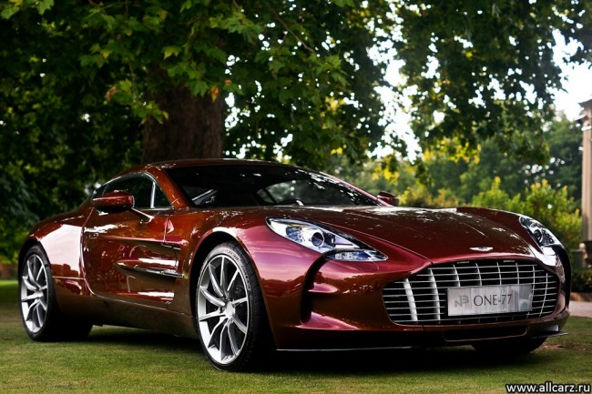
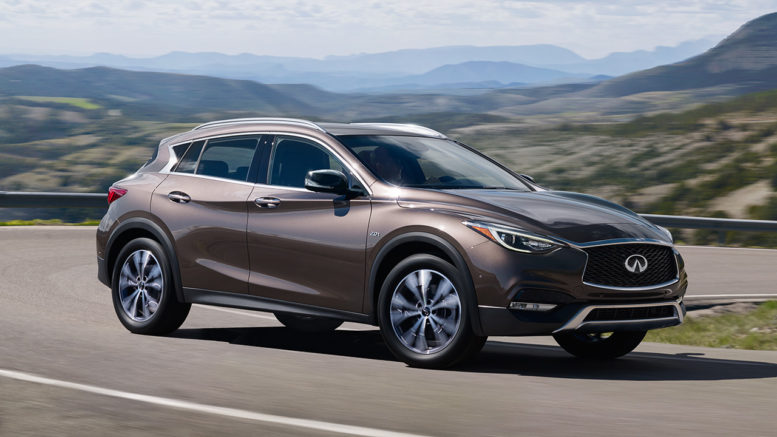

Rolls-Royce Ghost

Aston Martin One-77 |
|
|---|---|
|  | The Aston Martin One-77 is a two-door coupé built by the British car manufacturer Aston Martin. It first appeared at the 2008 Paris Motor Show, although the car remained mostly covered by a "Savile Row tailored skirt" throughout the show before being fully revealed at the 2009 Geneva Motor Show, and deliveries from the beginning of 2011. There was a limited run of 77 cars, giving part of the name of the One-77,and sold for GB£1,150,000. The One-77 features a full carbon fibre monocoque chassis, a handcrafted aluminium body, and a naturally aspirated 7.3 litre (7312 cc) V12 engine with 750 hp (560 kW). The top speed was estimated to be 220 mph (350 km/h) but actual tests in December 2009 showed a figure of 220.007 mph (354.067 km/h), with a 0–60 mph time of approximately 3.5 seconds. |
Rolls-Royce Ghost |
|
|---|---|
|
|
The Rolls-Royce Ghost is a British luxury car manufactured by Rolls-Royce Motor Cars. The "Ghost" nameplate, named in honour of the Silver Ghost, a car first produced in 1906, was announced in April 2009 at the Auto Shanghai show. The Ghost is based on a heavily modified platform shared with the F01 BMW 7 Series. The company concedes that 20% of parts are common to both cars. The Ghost has a 129.7-inch (3,290 mm) wheelbase, roof height, bonnet height and track widths all of its own, and the Ghost uses Phantom-style air springs. |
Infiniti QX70 |
|
|---|---|
|  | The Infiniti QX70 (formerly called the Infiniti FX until 2013) is a mid-size luxury crossover SUV produced by the Nissan-owned Infiniti luxury vehicle brand between the 2003-2017 model year. The FX replaced the QX4 as Infiniti's mid-size SUV, although the QX4 was larger than the FX. It shares the same FM platform as the rear-wheel drive Nissan 370Z, and it "made no claims of climbing mountains." Rather, its aggressive shape promised style and quick handling. The FX45 incorporates a 4.5-liter (4,494 cc) 32-valve V8 DOHC VK45DE gasoline engine with four valves per cylinder. Top Speed: 165 mph (266 km/h) (electronically limited). |